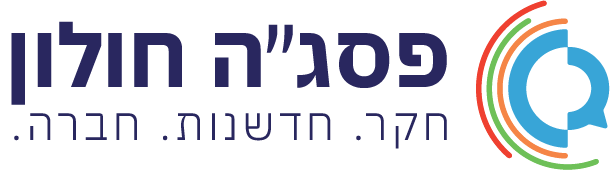

סוד הספרייה הנעולה
אוריינות לשונית

מרכז המיומנויותהבוגרת והבוגר 2030אתר מלווה למורים · פסג"ה חולון
בוחרים מיומנות בגלגל ומקבלים את ההגדרה הרשמית של משרד החינוך ואת יכולות הליבה שלה. לשלוש מיומנויות יש גם מדרג מפורט: 76 תתי-מיומנויות, ארבעה שלבים שמתארים מה רואים בכיתה, וכלים של 5–15 דקות.
חדרי בריחה בתלת-ממד לכיתות ז'–ט', 20–25 דקות, בזוגות או בקבוצות קטנות.
אוריינות לשונית
חשיבה ביקורתית
מודעות עצמית
לוחצים על מיומנות כדי לפתוח את הדף שלה. הצבעים הם צבעי האשכולות במצגת של משרד החינוך, ולכל אשכול גם דוגמה משלו (לקריאה בהדפסה בשחור-לבן). המספרים בגלגל מופיעים במקרא שמתחתיו.
מקור: משרד החינוך, "מיומנויות דמות הבוגרת והבוגר – מערכת החינוך 2020-2030" (מצגת, עמ' 5–6).
לכל 13 המיומנויות יש מדרג בארבעה שלבים וכלים קצרים לשיעור. לשלוש מהן יש מדרג מלא של צוות פסג"ה חולון (76 תתי-מיומנויות, מחולקות לרכיבים), ולשאר 10 המיומנויות יש מדרג של 50 תתי-מיומנויות.
מיומנויות שעוזרות לתלמידים להכיר את עצמם: לזהות ולשיים את הרגשות שלהם, להכיר את החוזקות, הערכים ודרכי הלמידה שלהם, ולהאמין ביכולת שלהם להתמודד ולהצליח. המשפחה מתמקדת במודעות עצמית.
3 רכיבים · 16 תתי-מיומנויות
מיומנויות של הבנה והבעה בשפה: הקשבה והבנת הנשמע, קריאה והבנת טקסטים כתובים, הבעה בעל פה ובכתב, וידע על מבנה השפה ועל השימוש בה.
6 רכיבים · 33 תתי-מיומנויות
מיומנויות שעוזרות לתלמידים לבחון מידע לפני שמקבלים אותו, לנתח ולהסיק מסקנות מבוססות, לשפוט לפי מדדים ברורים ולקבל החלטות מושכלות.
5 רכיבים · 27 תתי-מיומנויות
מה שהתלמיד יודע: עובדות, מושגים, תוכן של מקצוע.
מה שהתלמיד יודע לעשות עם הידע: להקשיב, לנסח, לבדוק מקור, להבין מה הוא מרגיש, לקבל החלטה.
הגדרת משרד החינוך למיומנות: יכולת כללית הנרכשת בלימוד ואימון, אשר תומכת ומנחה חשיבה, למידה והתפתחות ללא תלות בסוג הידע הנדון, ניתנת להעברה בין תחומי דעת ומאפשרת לעשות שימוש יעיל והולם בידע, ניסיון וערכים, במגוון רחב של הקשרים.
מקור: מסמך משרד החינוך "מיומנויות דמות הבוגר 2030" (2020), עמ' 3
מיומנויות הבוגר 2030 הן מה שתלמיד צריך לדעת לעשות, ולא רק לדעת, כשהוא מסיים את בית הספר. כל 13 המיומנויות שייכות לכל מורה ובכל מקצוע.
כל תת-מיומנות מתוארת בארבעה שלבים. השלבים מתארים התנהגות שרואים בכיתה, כדי לזהות מהר איפה תלמיד או כיתה נמצאים.
כלי לקידום הוא פעילות קצרה שמטרתה להעביר תלמיד משלב לשלב הבא. לא שיעור נוסף, אלא כמה דקות בתוך שיעור קיים, בכל תחום דעת.